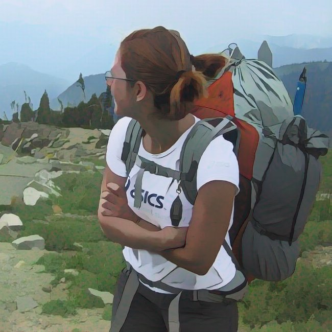

<div class="column-body-outset-left centered">

<div>
<p>Studied physics, math, ~neuroscience; now do ML.</p> 
<p>Boulder and run, read a lot, write some, always learning.</p>
<p class="justified">
ML because it felt natural after physics, closer to what matters in the day to day, exciting in how powerful it can be, challenging in how badly it can fail; mixing math, programming, and problem solving to create products and services that help people rather than manipulate or merely distract, and build technology that means less waste and instead of yet more stuff.
</p>
</div>
</div>